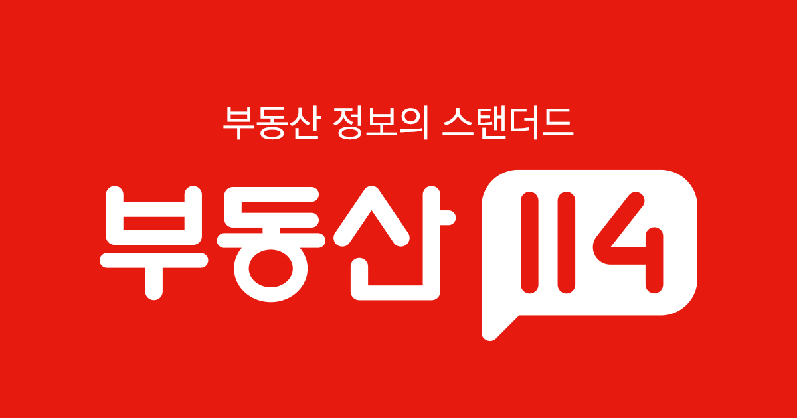

부동산114 R114
국내 최초 온라인 부동산 정보 플랫폼
최종 업데이트

부동산114는 어떤 브랜드인가
1999년 부동산 시세와 매물 정보가 공인중개사와 발품에 의존하던 시기에 온라인으로 부동산 정보를 제공하는 서비스로 출발했다. 아파트 시세, 매물, 청약 정보 등을 데이터베이스화해 일반인이 쉽게 접근할 수 있도록 했다.
이후 기업 대상 부동산 리서치와 컨설팅 사업으로도 영역을 넓혔다.
부동산114의 브랜드 아이덴티티는 무엇인가
부동산 정보의 비대칭 해소라는 문제의식에서 출발해 국내 부동산 정보 시장의 표준 데이터 제공자로 자리잡았다. 시세·매물 데이터베이스의 축적과 신뢰도를 기반으로 정보 서비스 영역을 확장했다.
부동산114 연혁 — 주요 사건은 언제였나
부동산114 로고는 어떻게 변해왔나
자주 묻는 질문
부동산114는 언제 설립되었나요?
부동산114는 1999년 설립되었습니다.
부동산114는 어떤 산업의 브랜드인가요?
부동산114는 브랜드·비즈니스 분야의 브랜드입니다.
부동산114의 브랜드 아이덴티티는 무엇인가요?
부동산 정보의 비대칭 해소라는 문제의식에서 출발해 국내 부동산 정보 시장의 표준 데이터 제공자로 자리잡았다.
출처와 검증
브랜드명은 한글과 원어를 함께 표기하되 데이터에 없는 표기는 만들지 않습니다. 기원 국가·설립연도는 검수된 정의문에서 확인된 값을 우선하고, 없을 때만 공식 웹사이트 URL이 일치하는 위키데이터 개체의 값을 씁니다. 탄생일의 월·일은 위키데이터, 위키백과 정보상자, 본문 가운데 같은 연월로 확인되는 값만 싣고, 출처끼리 다르면 싣지 않습니다.